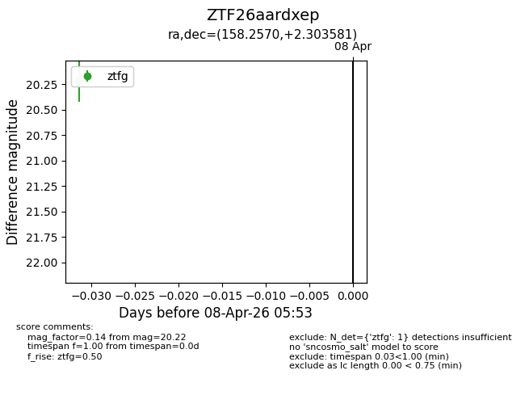
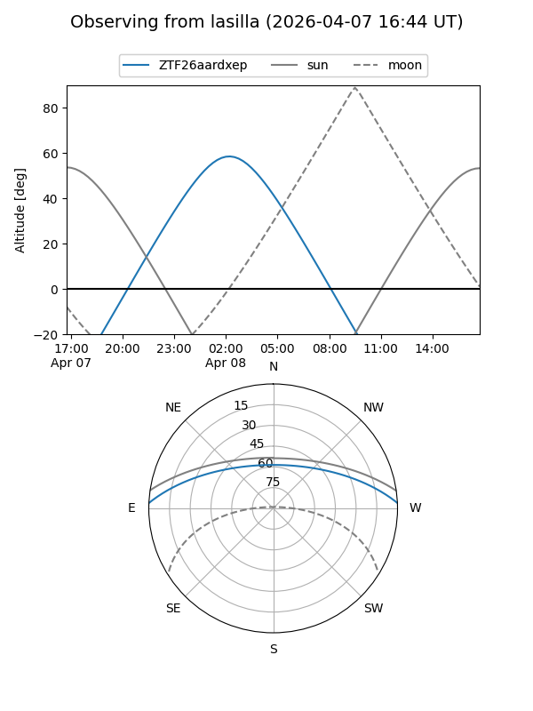
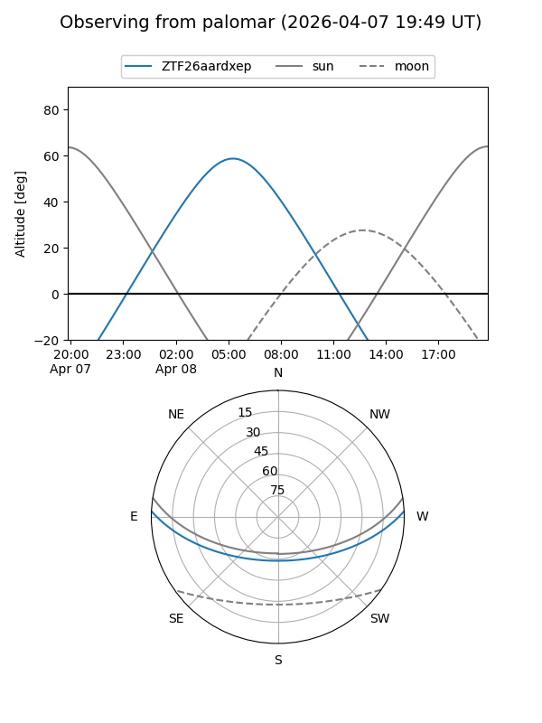

ZTF26aardxep
Target ZTF26aardxep at 2026-04-08 05:57
Aliases and brokers:
FINK: link
Lasair: link
ALeRCE: link
alt names
ZTF26aardxep (ztf,fink_ztf)
Coordinates:
equatorial (ra, dec) = 158.2570,+2.30358
equatorial (HMS+DMS) = 10:33:01.68,+02:18:12.89
galactic (l, b) = (243.8063,+48.61599)
Flags:
Photometry:
last ztfg=20.22
1 ztfg detections
Lightcurve

Visibility


Additional plots